Comic archives — comparison
Finished index · Review · QML notes
Run finished workbenchRun preserved original
Original worker HTML is a baseline, not approved native output. Both versions retain disclosed project artwork stand-ins. Full screenshots and metadata are linked below. Different-state comparisons explicitly name the tested transition.
10 boxes; 8 index posters; archive-titled raw shelf; Back restoration; supported Batman route preserves viewport/insets.
412×900 portrait
Original worker HTML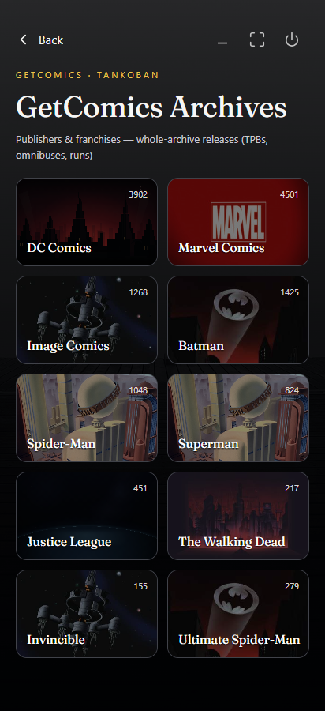
412×900 · 2026-10-31T22:57:58.592Z · SHA-256 eff89a17ac1725cfef272bd6697fdacd36b12fea314d99dd1f82b936822c9cfe
Capture metadata
comic-archive-original-portraitFinished HTML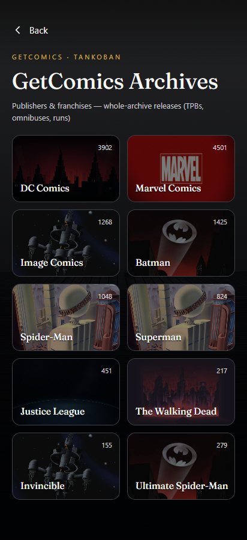
412×900 · 2026-10-31T23:55:55.768Z · SHA-256 056819ffa9fdc6fa359ad115f2118e3d284928793c11628047eacc767fcec5b8
Capture metadata
comic-archive-finished-handoff-portrait 900×412 landscape
Original worker HTML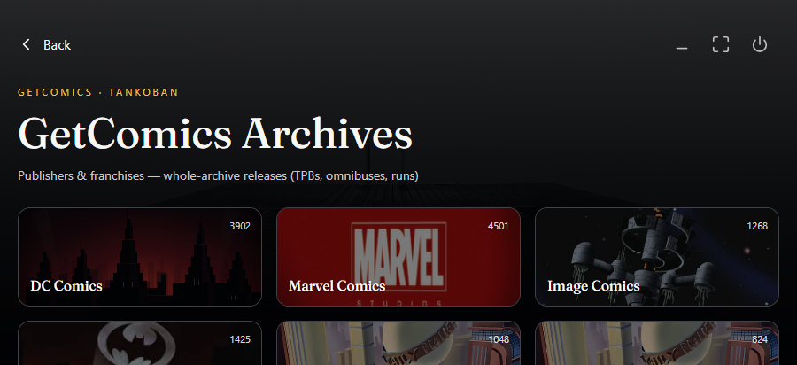
900×412 · 2026-10-31T22:58:00.875Z · SHA-256 b81195d0831ee32ca2f6c2efe0b537d30dc6daacf09a253e6ba155489ed1696e
Capture metadata
comic-archive-original-landscapeFinished HTML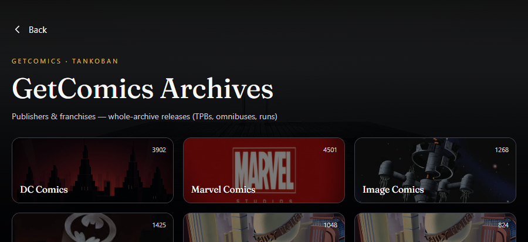
900×412 · 2026-10-31T23:55:58.619Z · SHA-256 4966858f7306b87042f82aa06444c0af28d6c51f32232223c1e51c9a0ec7dfd3
Capture metadata
comic-archive-finished-handoff-landscape 1280×700 desktop HTML comparison
Original worker HTML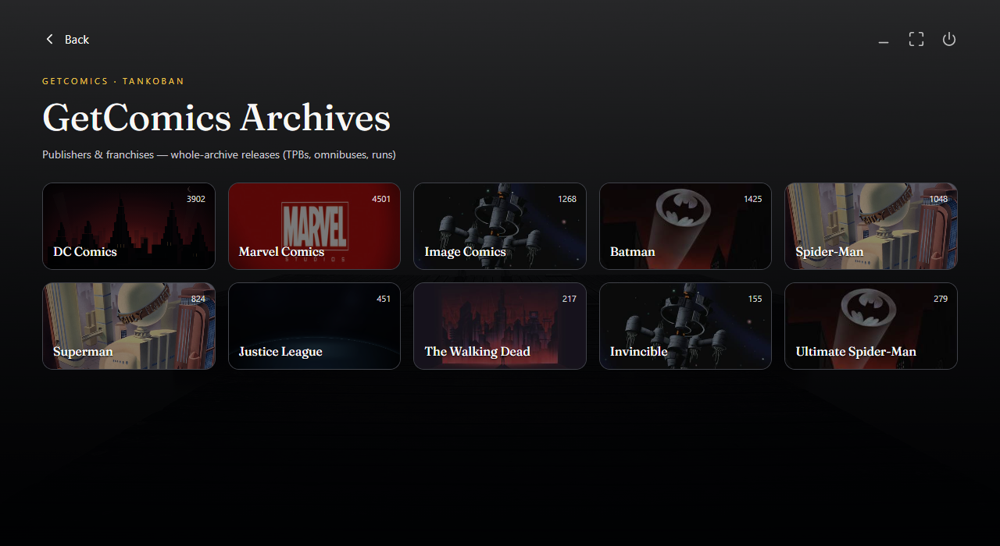
1280×700 · 2026-10-31T22:58:03.261Z · SHA-256 6e6f5f2effd9be8b7990f316602dceb5c87e96274906b5c577febbfe27d71f62
Capture metadata
comic-archive-original-desktop-htmlFinished HTML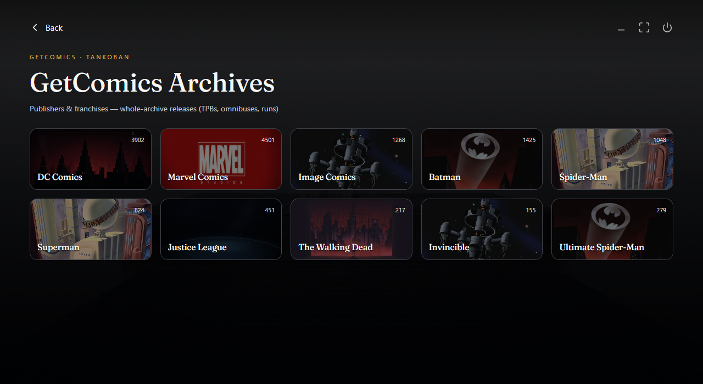
1280×700 · 2026-10-31T23:56:03.129Z · SHA-256 f1ed60f1011fde8c777db165a0c58df16b951871aa637f0f74732cddf82220c0
Capture metadata
comic-archive-finished-handoff-desktop-html 354×792 portrait
Original worker HTML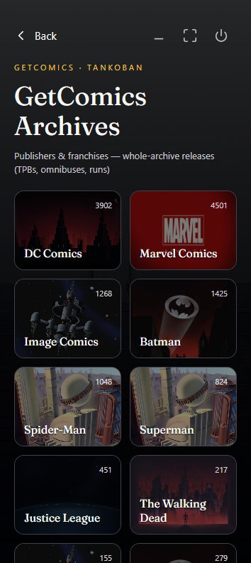
354×792 · 2026-10-31T22:57:59.844Z · SHA-256 181aa4816a52b103c247ff05a84861443d7ae1413fbafdc9bf4a8f60a5488fbb
Capture metadata
comic-archive-original-portrait-smallFinished HTML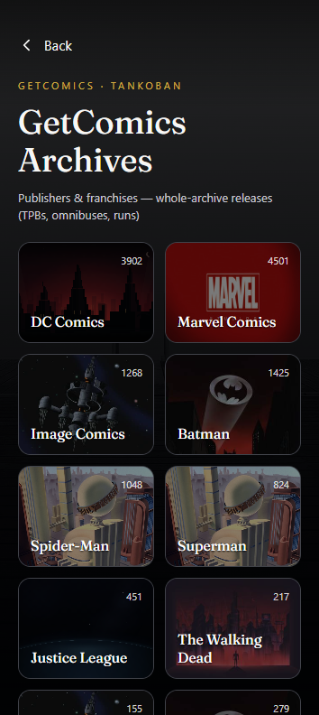
354×792 · 2026-10-31T23:55:57.188Z · SHA-256 6106441506ba2fe0e7bf1503cbc54570f9b78d7af614876abf6d15daeb37bb9f
Capture metadata
comic-archive-finished-handoff-portrait-small 792×354 landscape
Original worker HTML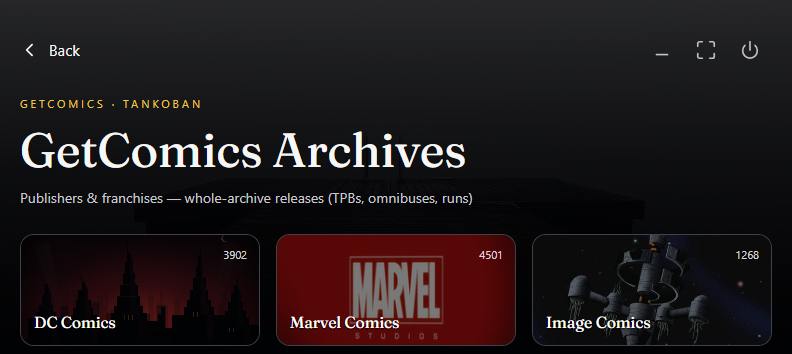
792×354 · 2026-10-31T22:58:01.921Z · SHA-256 af110f7c54f37636687b5189f73c17801ba8616b84ad275c37794f108a3c67ce
Capture metadata
comic-archive-original-landscape-smallFinished HTML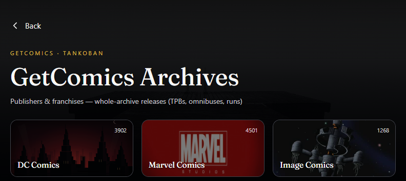
792×354 · 2026-10-31T23:56:00.821Z · SHA-256 30e0fb9026b9765db05803a08fc2b7cda94c7341f67b76b173a0a5dd87615552
Capture metadata
comic-archive-finished-handoff-landscape-small Tablets — finished versions
800×1280 Android tablet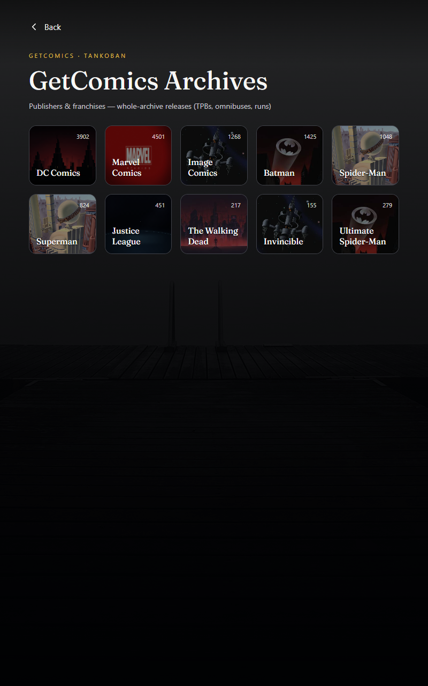
800×1280 · 2026-10-31T23:56:05.045Z · SHA-256 84411b005e572a636a80fccca68c7c17bb49476142e93f4daf6465cef86d59ff
Capture metadata
comic-archive-finished-handoff-tablet-portrait1280×800 Android tablet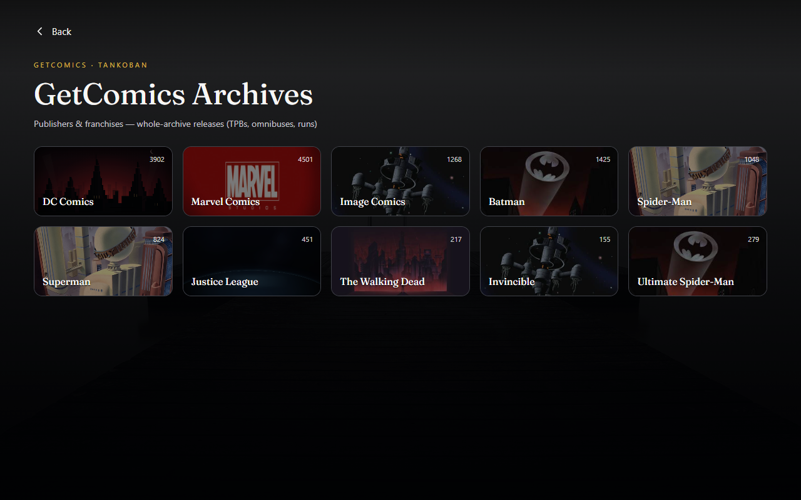
1280×800 · 2026-10-31T23:56:06.701Z · SHA-256 3f8d4e8425c1e64c670d16ca5fb3b2cfc920a33958010f67e2742a5757720a06
Capture metadata
comic-archive-finished-handoff-tablet-landscape All releases destination — original loses identity and review parameters
Original worker HTML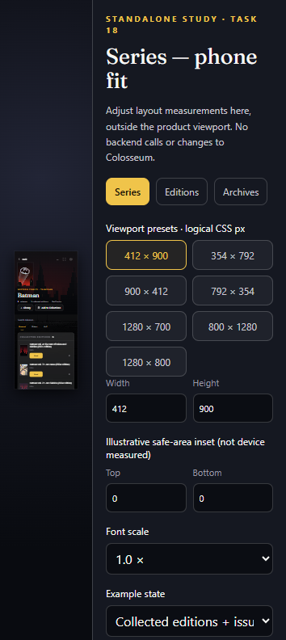
354×792 · 2026-10-31T23:34:22.294Z · SHA-256 39c3906ea0d4503c47d5410d6b7844e93e7fc95a57f6324178912a10bb1a33c1
Capture metadata
comic-archive-original-all-releases-wrong-routeFinished HTML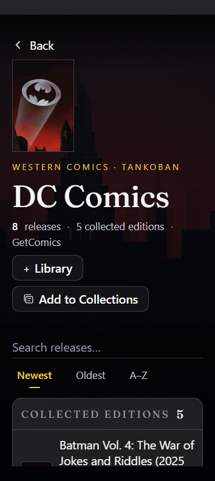
354×792 · 2026-10-31T23:05:46.855Z · SHA-256 e411f546267de3506238d7e08b500f54461471481bcd7580ad1c8625f7138b97
Capture metadata
comic-archive-finished-all-releases-portrait-small-stress Evidence ledgers